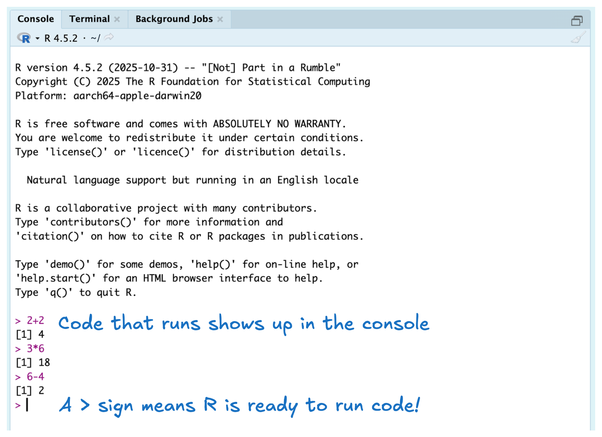
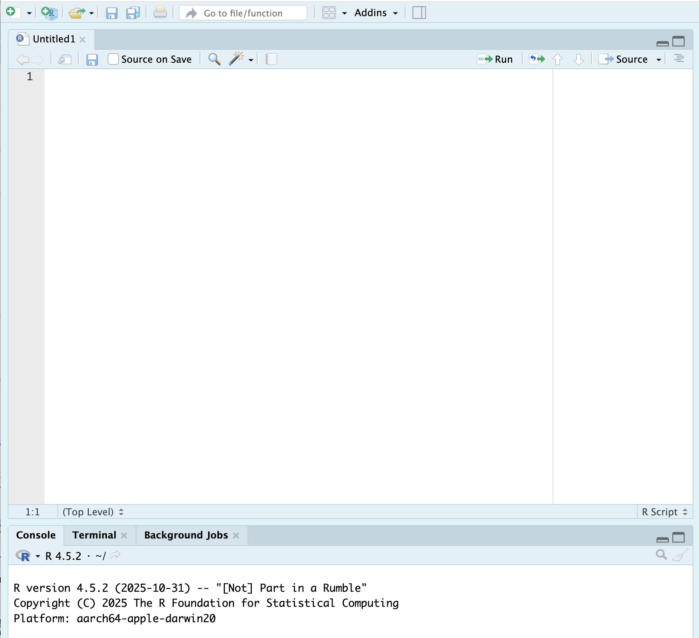
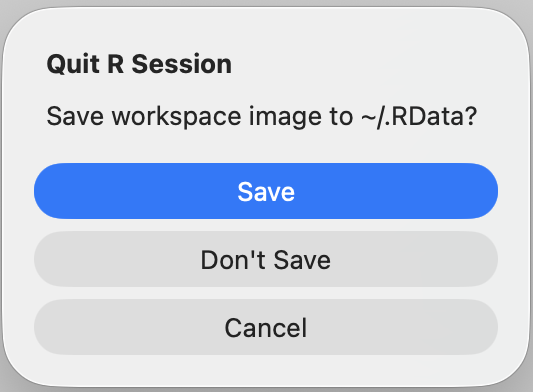
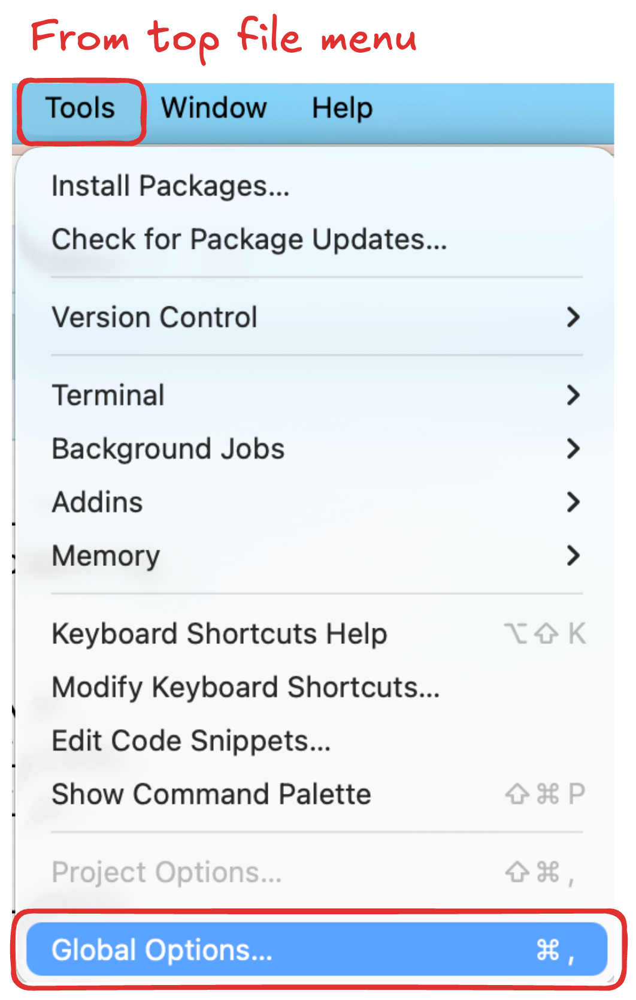

x <- 8
z <- x + y
y <- 52 What is Code
3 Welcome to RStudio!
RStudio is the integrated development environment (IDE) we will be using to interact with R. RStudio is a very powerful environment that has lots of capabilities. We will learn many of these as we go, so right now we are going to focus on the most important aspects!
3.1 RStudio Layout
When you open RStudio on your computer, you should get something that looks like the image below. You should see three panes, two on the right hand side and one on the left. Let’s learn what these do!
![A screenshot of an RStudio window highlighting the three different panes that open by default. The first pane (on the left hand side) is called the 'Console Pane.' This is the pane where the code you run shows up! In the upper right hand corner, there is the 'Environment and History Pane,' which is comprised of four tabs---Environment, History, Connections, and Tutorial. The Environment tab displays the objects that have been created in your code and the History tab displays a history of the code you've run. In the lower right corner there is the 'Files, Packages, and Help Pane,' which has six different tabs---Files, Plots, Packages, Help, Viewer, and Presentations. The file tab is displayed in the image, showing that (by default), the files will show you your current working directory. For this computer, that current working directory is the Macbook Hard Drive (similar to a PC's C drive).](images/01-rstudio-three-pane-annotated.png)
On the left, you will find the Console pane. The Console is where you will see your code execute! In the top right, you can find the Environment and History tabs. These tabs show any objects you’ve created and a history of the code you ran. In the bottom right, you will find the Files, Help, and Packages tabs. These tabs allow you to access files on your computer, install and load packages, and access documentation (help) pages for functions you might be trying to use.
4 What is code?
4.1 What makes R different?
R is a statistical programming language. Unlike more general-purpose languages, R is optimized for working with data and doing statistics. R was created by Ross Ihaka and Robert Gentleman in 1993 (hence “R”) and was formally released by the R Core Group in 1997 (a group of 20-ish volunteers who are the only people who can change the base, built-in functionality of R). If you want to build an independent, standalone graphical interface, or run a web server, R is probably not the ideal language to use (you might want C / Python or PHP / Python, respectively). If you want to vacuum up a bunch of data, fit several regression models, and then compare the models, R is a great option and will be faster than working in a more general-purpose language like C or base Python.
One thing to know about R is that it is open-source. This means that no company owns R (like there is for SAS or Matlab) and that developers cannot charge for the use of their R software. This does not mean that all of your code needs to be public (you can keep your code private), but it is important to be a good open-source citizen by sharing your code publicly when possible (in STAT 3820 you will learn about GitHub), contributing to public projects and packages, creating your own packages, and using R for ethical and respectful projects.
NoteThe History of
R
If you would like to learn more about the history of R, here is an excellent article written by Roger Peng.
5 Running Code (in the Console)
When you open RStudio, the console pane should display information related to your R session. You should see something like the message displayed below. This message tells you two things (1) R was successfully detected on your computer, and (2) the version of R with which you are working.
R version 4.5.2 (2025-10-31) -- "[Not] Part in a Rumble"
Copyright (C) 2025 The R Foundation for Statistical Computing
Platform: aarch64-apple-darwin20
R is free software and comes with ABSOLUTELY NO WARRANTY.
You are welcome to redistribute it under certain conditions.
Type 'license()' or 'licence()' for distribution details.
Natural language support but running in an English locale
R is a collaborative project with many contributors.
Type 'contributors()' for more information and
'citation()' on how to cite R or R packages in publications.
Type 'demo()' for some demos, 'help()' for on-line help, or
'help.start()' for an HTML browser interface to help.
Type 'q()' to quit R.
Important
If you don’t see information related to your R session when you open RStudio or RStudio tells you it doesn’t detect R on your laptop you either forgot to install R or installed it in an unexpected location.
5.1 The Console Tab
It is possible to run code directly in the console! This code can be simple arithmetic like 2 + 2 or 3 * 6 or 6 - 4. The output of each line is showed below (e.g, [1] 4). Next week we will learn what the [1] means with the output, so for now we will focus on the number that is output.
 character (indicating the start of a line of code) with 2+2 next to it. Immediately below this line is the output, displaying the number 4. The next line shows another > (indicating the start of another line of code) and 3*6. The output below this line shows 18. Finally, the third line of code (after another > character) shows 6-4, with an output of 2. The annotation says that the Console shows code that was run and that the > symbol means that R is ready to run code.">
Practice-exercisePractice Activity
Run these same three lines of code in your console.
5.2 Creating Objects
It seems a bit silly to use R as a calculator when it can do so much more for us! A key aspect of working in R is the idea of storing values into objects. When storing a value into an object, your code will look something like this: x <- 5
Believe it or not, there is a lot going on in this simple line of code. So, let’s break it down.
xis the name of the object we are creating5is the value we want to store insidex<-is an operator that binds the namexto the value5
The <- works similar to an = sign, but we are specifically using an <- because we believe it makes the action of assignment more explicit.
Practice-exercisePractice Activity
Create two objects in your console, one named x which has the value 3 stored in it and one named y which has the value 4 stored in it.
You should have noticed when you created x and y that the values are not printed, they are just stored. If you want to view the value, you would need to type x to see its contents.
5.2.1 Environment tab
Now that you’ve created two objects, there are some interesting things to notice in the upper right corner. The Environment tab displays any objects which are defined in memory. Currently, both objects you’ve created should be labeled “Values”, but later on we will start to see objects labeled “Data” and “Functions”.

5.3 The History Tab (Top Right)
Another useful tab in this pane is the History tab, which shows you a running list of every command you’ve ever run. At this point you should have run (at least) five lines of code, all of which should be displayed in the history.

5.4 Updating Objects
Currently, the values of x and y are 3 and 4 respectively, but we might need to update their values. If we want to change the values of x or y, we simply need to assign them new values.
Practice-exercisePractice Activity
Code tracing is a great technique for understanding what happens to an object at each line of code. Use the table below to trace the values of x, y, and z for each of the three lines of code above.
| Line | x |
y |
z |
|---|---|---|---|
| Line 1 | 4 | Does not exist | |
| Line 2 | |||
| Line 3 |
6 Saving Your Code
This process of updating objects in the console seems a bit tedious and error prone. If we made a mistake we can’t modify our previous code, so we will need to write another line of code. Moreover, it would be a bit tedious to get a history of all the code we ran. Enter R scripts!
6.1 Scripts
An R script is a document that can store your code! Specifically, an R script is a plain text file whose entire purpose is to store R commands. Instead of typing code line-by-line into the console, we can write our code in a script, save it, and run it whenever we need.
Working in an R script has several advantages. First, it allows us to easily edit and fix mistakes without rewriting code from scratch. Second, scripts provide a complete record of the steps we took to perform an analysis, making our work easier to understand, reproduce, and share with others (or with our future selves!). Finally, scripts help us organize our code, encouraging clearer structure, comments, and good programming habits as our projects grow.
Let’s create our first R script!
6.1.1 Creating an R Script
In the upper left hand corner, you should see an image of a white sheet with a green plus sign. If you click this button you should see something like the image below:

If you click on the R Script option, a new file should appear and your RStudio should look something like this:

Practice-exercisePractice Activity
Create an R Script in your RStudio!
6.1.2 The Editor Pane
Now that we have a document to edit, we can see the fourth pane in RStudio—the editor pane. There are many different files we can create in RStudio. The logo in the top left of the document indicates the type of file we have open. An R script file has a blue circle with the letter R.
Let’s start typing in the script, so we can explore some of the other buttons available to us.
6.1.3 Running Code
Copy the code below into your R script, so we can explore the various ways to run code.
a <- 1
b <- 4
c <- a + b
fname <- "Jane"
lname <- "Hollander"Now that we have code in the script we can see that code numbers are provided on the left. This is a handy way to see where in the code the errors occur. There are a few ways to run code:
place your cursor on the line you want to run and click the run button
place your cursor on the line you want to run and hit Command + Enter (or Control + Enter)
{kind=link}
Either of these options will run the line of code that your cursor is on and then hop to the next line (if there is one).
Practice-exercisePractice Activity
Run each of the five lines of code in your R script. Try both methods of running code and see which one you prefer!
6.1.4 Saving Your R Script
You’ll notice that currently your script is labeled “Untitled1” that is because we haven’t saved the file anywhere. If we were to try and close our file before saving RStudio would tell us that our document had unsaved changes. Let’s save our document so we have access to it later on!
 You can save your file a few different ways. First, you can always use Command + S (or Control + S) to save a file. Second, you can click on the blue floppy disk immediately below your file name.
You can save your file a few different ways. First, you can always use Command + S (or Control + S) to save a file. Second, you can click on the blue floppy disk immediately below your file name.
{kind=link}
Either of these options should open a popup menu for you to select where you want the script to be saved. Navigate to your stat-1810 folder that lives in your Documents folder. Change the file name to week-1.R.
6.1.5 Files tab
Now that you’ve saved your script, it should appear in the Files tab in the lower right corner. By default, the Files tab starts at your computer’s working directory (the hard drive). If we wanted to get to a specific file, we could click through the path to get to that file.
To get to the week-1.R file I needed to click through two folders:
Documentsstat-1810
![A series of three screenshots demonstrating how to get to the week-1.R file saved in the stat-1810 folder. The first screenshot shows the 'Home' directory, which is similar to the C Drive on a PC. The Documents folder is outlined in red, as that is the folder that needs to be clicked on. The second screenshot shows the files stored in the Documents folder. There are six folders and the stat-1810 folder is highlighted in red. The third screenshot shows the week-1.R file which lives in the stat-1810 folder. At the top of the screenshot there is a red box highlighting the path to get to the week-1.R file (Home > Documents > stat-1810).](images/01-rstudio-file-path-annotated.png)
6.2 Writing Code for People
While scripts are a great way to store our code, scripts often don’t make it easy for people to understand the processes enacted in the code. Yet, in almost every data science setting someone else will be reading your code. So, it is important to learn how to write readable code. As you become more proficient at programming, you will realize quickly that writing readable code is more challenging than writing working code but it is possibly just as important as getting a working solution.
6.2.1 Code Comments
One way to make code easier to understand is the use of code comments. Since an R script can only contain R code, a code comment is your way of interweaving a written description into a script. Fundamentally, a code comment starts after a #. The # symbol indicates to R that this line of text should not be executed as code.
You can use code comments to describe the actions taken by the code. Notice how each code comment below describes what is happening in the subsequent lines. Stylistically, it is important to have a space between the # and the text so the comment is easier to read.
# Creating variables x and y
x <- 8
y <- 5
# Creating z to depend on current values of x and y
z <- x + yYou can also use code comments to comment out a line of code, so it is not executed. Note that we are still using a space after the # to make the line of code (being commented out) easier to read.
# Creating variables x and y
x <- 8
y <- 5
# Creating z to depend on current values of x and y
# z <- x + y
NoteHow many
# to use?
Technically, you could use as many # as you want when making a code comment (e.g., #### Creating variables x and y). However, it is not recommended to use more than one # for consistency and readability.
7 Exiting RStudio
Now that we’ve accomplished what we set out to do, we can close RStudio. When you try and close RStudio, you should get a message like the one below. You might wonder what this message means. Let us tell you!

When you exit an R session, you’re faced with the question of whether or not to save your workspace. The workspace is an image of all the objects you created while you were working in R into a file called .RData. If you save your workspace, when you reopen RStudio that workspace will be loaded and all the objects you created previously will be available to you. This might sound like something you might want, but actually can cause some major headaches.
Loading a saved workspace turns your R script from a program, where everything happens based on a series of known steps, to something more akin to a cardboard box full of assorted pages and pictures that you don’t remember where they came from and why you made them. This has two major issues. First, this action can clutter your workspace with lots of objects you don’t need. Second, the versions of the variables stored in your workspaces might be different from what you want them to be (or think they are) and will cause issues in your code.
Fundamentally, you should never need to save your workspace because your scripts should contain all the code you need to create the objects that you want to store. So, let’s walk you through how to never save your workspace.
Click “Cancel” in the pop-up window above (with the message about saving the workspace image). Now, at the top file menu for RStudio, click on Tools. In the dropdown menu that appears, click on “Global Options”.

In the menu that appears, you want to uncheck the box next to “Restore .RData into workspace at startup.” Next, you should select “Never” from the dropdown menu next to “Save workspace to .RData on exit” (there are three options). Once you’ve changed these options, click “OK” and the popup window should close.
![A screenshot of the popup window that appears after you select 'Global Options' from the previous menu. The popup window has A LOT of options, but there is a red box outlining the section we need to focus on. Under 'Workspace' there is a checkbox next to a line that says 'Restore .RData'. This box should be unchecked. The next line says 'Save workspace to .RData on exit.'. Next to this line there is a dropdown menu with three options: Always, Never, Ask. We need to change this option to 'Never'. Once these options have been modified, click on 'OK' to exit.](images/01-rstudio-save-rdata-annotated.png)
Now, it is safe to exit RStudio!